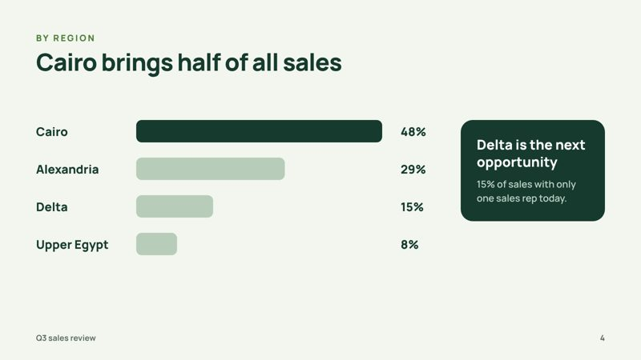
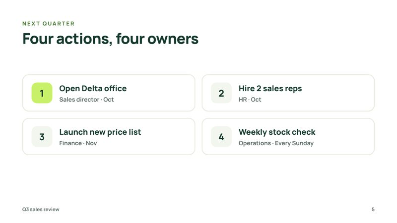
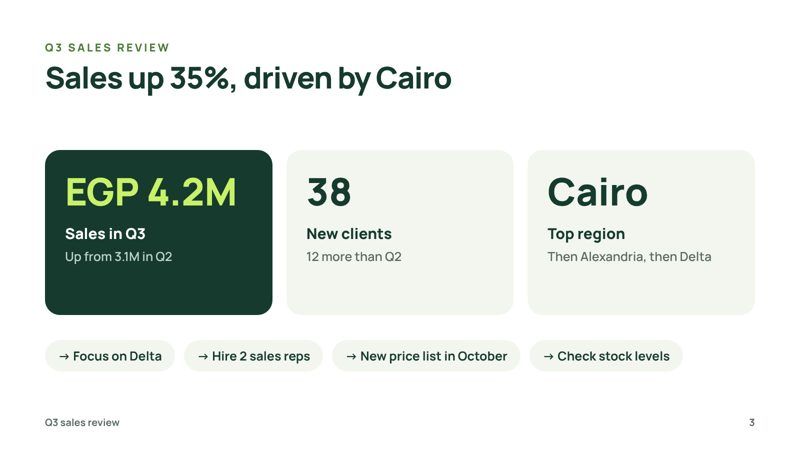
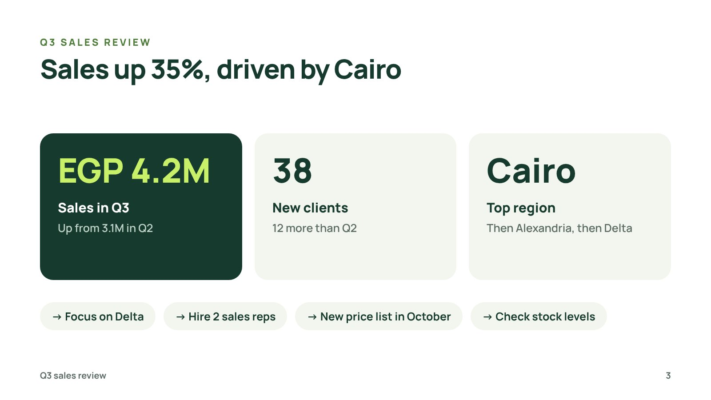
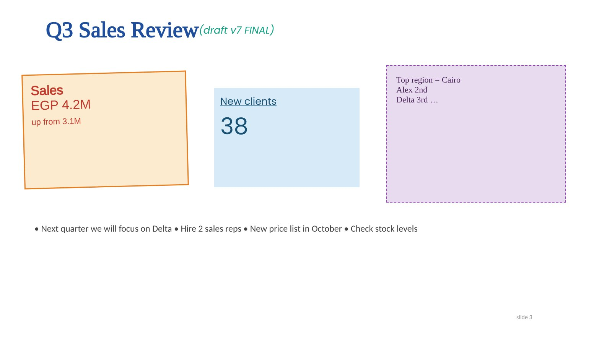

Formatting your deck
Your slides, your words, made consistent: same fonts, same colours, same grid.
Online nowI reply myself in 15–30 minutes



Before and after
Drag to compare


Watch me work on it


Packages
Fixed price. No extra fees.
StarterUp to 20 slides
Market price $150Save 53%
$70
Within 24 hours- Unlimited revisions
- Editable source file + PDF
- Pay after a watermarked preview
Most chosenStandardUp to 40 slides
Market price $240Save 54%
$110
Within 24 hours- Unlimited revisions
- Editable source file + PDF
- Pay after a watermarked preview
PremiumUp to 60 slides
Market price $340Save 53%
$160
Within 2 days- New Slide Master
- Unlimited revisions
- Editable source file + PDF
- Pay after a watermarked preview
Compare packages
| Starter | Standard | Premium | |
|---|---|---|---|
| Size | Up to 20 slides | Up to 40 slides | Up to 60 slides |
| Delivery | Within 24 hours | Within 24 hours | Within 2 days |
| My price | $70 | $110 | $160 |
| New Slide Master | — | — | ✓ |
| Unlimited revisions | ✓ | ✓ | ✓ |
| Editable source file + PDF | ✓ | ✓ | ✓ |
| High-quality images and icons | ✓ | ✓ | ✓ |
| Your colours, fonts and logo | ✓ | ✓ | ✓ |
| Checked 3 times | ✓ | ✓ | ✓ |
| Pay after a watermarked preview | ✓ | ✓ | ✓ |
See it on stage
See your slide where you will present it.
Questions
Do I pay before I see anything?
No. You see your file with a watermark first. You pay, then you get the clean files.
How many changes can I ask for?
As many as you need on the same order, until you are happy.
What files do I get?
The editable source file (PPTX, DOCX or XLSX) and a PDF.
Is my file kept private?
Yes. I never show client files. Every sample here is my own concept design.
What time zone do you work in?
{tz}. I’m online 9:00–23:00 my time, and every delivery date on this site is shown in your own time.
Send me your file.
You get a fixed price and a delivery time first.
Online nowI reply myself in 15–30 minutes